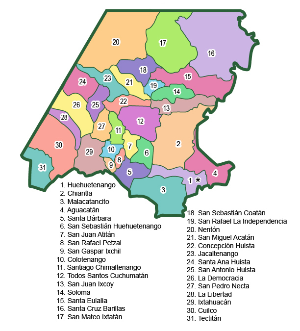

Huehuetenango es un departamento de la región nor-occidente del país de Guatemala y cuenta con un total de 32 municipios. Tiene una extensión territorial de 204 kilómetros cuadrados, y cuenta con una cabecera municipal, veinte aldeas y veinticinco caseríos. Municipios: Aguacatán, Brillas, Colotenango, Concepción Huista, Cuilco, Chiantla, Huehuetenango, Ixtahuacán, Jacaltenango, La Democracia, La Libertad, Malacatancito, Nentón, Petatán, San Antonio Huista, San Gaspar Ixchil, San Juan Atitán, San Juan Ixcoy, San Mateo Ixtatán, San Miguel Acatán, San Pedro Necta, San Pedro Soloma, San Rafael La Independencia, San Rafael Petzal, San Sebastián Coatán, San Sebastián Huehuetenango, Santa Ana Huista, Santa Bárbara, Santa Eulalia, Santiago Chimaltenango, Tectitán, Todos Santos Cuchumatán, Unión Cantinil.
